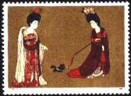
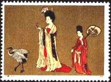
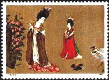
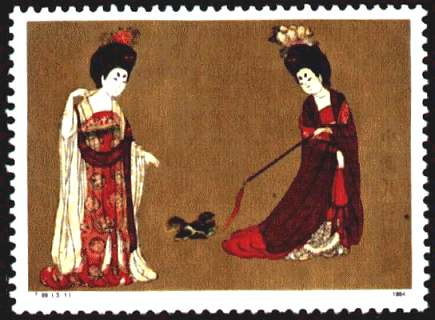
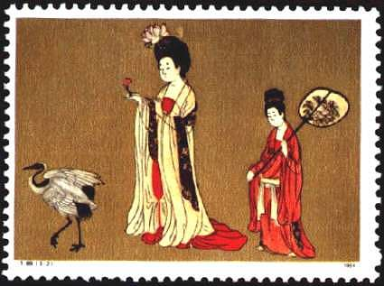
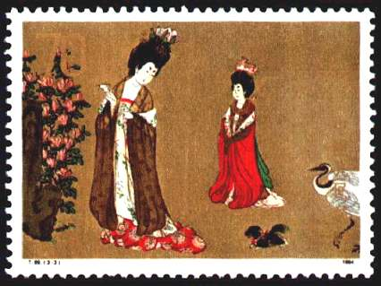
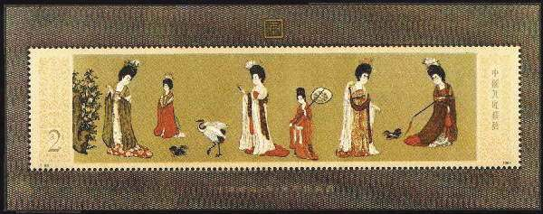

|
<1> T89 Chinese Paintings: Beauties Wearing Flowers
in Hair, set of 3 stamps, details
<2> T89M Chinese Paintings: Beauties
Wearing Flowers in Hair, Miniature Sheet, the whole painting
A: About the stamps of this set:
<1> T89
Date of Issue: March 24,1984
Perforation: 11
Printing Process: Photogravure
Size of Design: 54*40
Sheet Composition: 28 (4*7)
Painter: Zhou Fang (Tang Dynasty)
Designer: Shao Bailin
Printer: Beijing Stamp Factory
(1) 8 fen, Part 1 of the Scroll
(2) 10 fen, Part 2 of the Scroll
(3) 70 fen, Part 3 of the Scroll
<2> T89M [Miniature Sheet]
Date of Issue: March 24,1984
Perforation: 11
Printing Process: Photogravure
Size of Design: 162*40
Painter: Zhou Fang (Tang Dynasty)
Size of Miniature Sheet: 176*66
Designer: Shao Bailin
Printer: Beijing Stamp Factory
(1) 2 Yuan, Beauties Wearing Flowers in Hear |

|
|

|

|
B: Background:
"The Ladies Wearing Flowers in Hair" is a
well-known ancient Chinese painting, significant in the history of
art. It depicts the comfortable, gorgeous, happy life of noble women
in the Tang Dynasty. The painter is Zhou Fang of Tang Dynasty (AD
618-907), famous for feature painting during the then times. Zhou
was born in a noble family in Chang'an, Shaanxi Province, in the
last year of the Kaiyuan, and died in the year of Zhenyuan. Zhou was
specialized in painting ladies, portraits and
temple murals. This painting is set on a scroll, 180 cm long and 46
cm
wide. It is now preserved in Liaoning museum, located in Northeast
China.
|

|
C: Design:
<1> T89 Chinese Paintings: Beauties Wearing Flowers
There are three stamps in a set. Stamp 3-1 depicts two noble ladies
playing with a pet dog. One tricks it with a long, thick rope; the
other is a spectator with her fingers pointing at the lovely dog,
which was a precious pet only imperial family and aristocrats could
afford to buy one from Samaria in western Asia. It was a pet dog
that accompanied noble women to spend their leisure time, playing
and laughing. |
|
Stamp 3-2 depicts a noble woman watching the flower she holds
in her right hand and a gold hairpin in her left hand, as if
thinking how to set them in her hair. On the left is a crane
fluttering its wings. On the right is shown a maiden holding a fan,
and bending her head. |

|
|

|
On the stamp 3-3
there are shown two noble women. One catches a
butterfly from the flowers nearby and turns slightly back to look at
the dog running and snarling behind her and the slowly walking
crane. Another noble young lady is straightening her sleeves and
walks gracefully. |
This set of stamps mainly adapts the three parts of the
painting, preserving its major features. The painting is a rich
colorful painting in traditional Chinese realistic skills
characterized by the fine brushwork and close attention to detail.
The lines are the major means for modeling in Chinese paintings. The
lines drawn on this painting are fine and colorful, simple and
expressive. The faces and hands of those noble women are drawn
precisely, refined and round and tender, a little exaggerative but
animated, for example, the delicate fingers of the butterfly -
catcher, the manner of the flower-holder, the nimble hand of the
rope-whipper. The silk clothes on those noble women appear flowing
and fluttering, showing their feel of good quality. They look
translucent and the women's skin and flesh appear almost visible
through those thin fabric. The figures of those noble women
look gracefully plump, which shows the aesthetic view people held in
the Tang Dynasty.
Figures on the painting are depicted differently, for example the mischievous and merry woman who plays with the pet dog,
the concentrated lady who examines the flower and hairpin, the
sublime woman who is taking a walk, the casual lady who holds a
butterfly, all are depicted animated. In composition, various
objects are arranged to render a sense of variation and rhythm, for
example, the ones in distance and the ones in near, the large ones
and the small ones, the ones in rest, and the ones in motion. In
coloring, the colors are bright and intensive, simple and natural.
The women's skin is painted with white powder to look like as tender
as now, as beautiful as flowers. Their clothes are painted with
complicated colors, in order to look as gorgeous as golden foils decorated
with bouquets of flowers.

<2> T89M Chinese Paintings: Beauties Wearing Flowers in
Hair [Miniature Sheet]
The sheet shows the
overall view of the painting "Ladies Wearing Flowers in
Hair", on which six women appear; five of them are noble women,
one is a maiden. One woman is looking at flowers, another is catching
butterfly, a third is taking a walk, and the fourth is playing with a pet
dog--all depicts the leisure life of nobles in palaces.
|